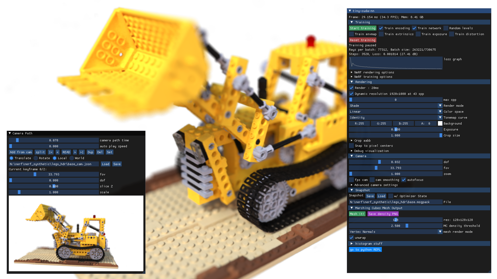
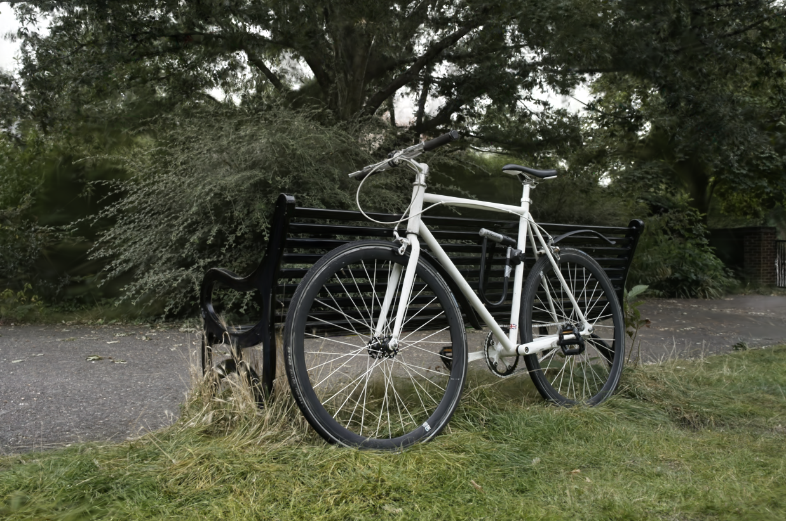

Computer Graphics — 2026
From cameras to 3D worlds — how neural networks learn to see in three dimensions
Computer Graphics · 2026
01 — Context
Two dominant approaches — both have fundamental walls.
Approach A
Manual 3D Modeling
Approach B
Photogrammetry (SfM)
02 — Foundation
Multiple photos → 3D point cloud via triangulation
Works well
Struggles with
03 — Paradigm Shift
Instead of storing geometry explicitly,
a neural network learns to represent a 3D scene
and can synthesize it from any new viewpoint.
Method 1 · 2020
NeRF
Neural Radiance Field
A tiny MLP network encodes the entire scene as a continuous function. Query any 3D point + direction → get color & density.
Implicit · MLP · Volume RenderingMethod 2 · 2023
3D Gaussian Splatting
3DGS
Millions of 3D Gaussian blobs explicitly represent the scene. Project onto image plane and alpha-composite for real-time rendering.
Explicit · Rasterization · Real-time04 — Deep Dive
One ray per pixel → neural network → pixel color
NeRF · Result
The lego bulldozer scene — one of the original NeRF benchmark objects. Trained from ~100 photos, rendered from a completely new viewpoint.
Source: instant-ngp (NVIDIA) · MIT License

05 — Deep Dive
Point cloud → 3D blobs → project → blend → pixel
06 — In the Wild
From research demos to consumer apps
UC Berkeley's modular framework for training and visualizing NeRFs. Supports many variants: Nerfacto, Instant-NGP, Splatfacto.
iPhone app: walk around an object, upload video → high-quality NeRF in minutes. Used for product photography and real-estate.
Original 3DGS paper achieved real-time 30fps rendering with quality matching NeRF. Open-source code on GitHub.
Input (classical)
Sparse point cloud from photogrammetry — clearly visible holes, no fine detail, cannot render novel views
Output (neural rendering)
Dense, photorealistic rendering from any viewpoint — no holes, correct reflections, smooth surfaces

3DGS · Result
The bicycle scene from the original 3DGS paper. An outdoor real-world capture rendered at 30–100+ fps.
Source: Kerbl et al., SIGGRAPH 2023 · INRIA
07 — Evaluation
Strengths
Photorealistic quality
Results match or exceed traditional rendering in perceptual quality metrics (PSNR, SSIM, LPIPS)
Fully automatic
No manual modeling — just photos as input. Reduces production time from days to hours
Novel view synthesis
Can render viewpoints that were never physically captured by any camera
Compact representation
NeRF stores an entire scene in ~5MB of MLP weights
Limitations
Long training time
NeRF: 1–8 hours per scene on a single GPU. 3DGS: faster (~30 min) but still slow
Real-time rendering (NeRF)
Vanilla NeRF renders at ~1 fps. Only Instant-NGP / 3DGS achieve real-time speeds
Hard to edit
Removing objects, changing colors, or animating elements requires specialized techniques beyond vanilla training
Static scene assumption
Moving objects (people, cars) cause artifacts — assumes the scene is completely static during capture
08 — Outlook
Open Challenges
Dynamic Scenes
Both methods assume a fully static world. People, vehicles, and moving objects corrupt the model. Active research: D-NeRF, 4D Gaussians.
Large-Scale Scenes
City-scale or unbounded outdoor scenes require scene partitioning, distributed training, and specialized positional encoding.
Relighting
Learned color bakes in the original lighting. Changing light direction requires explicit material decomposition (albedo + roughness).
Future Directions
Real-time NeRF on mobile
Instant-NGP and mobile-optimized variants bringing neural rendering to phones
Generative Neural Fields
Text → 3D scene: DreamFusion, Shap-E. No photos needed — just a text prompt
Game Engine Integration
3DGS plugins for Unreal Engine / Unity — scan the real world, render in game engine at 60fps
Robotics & Medical Imaging
NeRFs for robot navigation and surgical planning — reconstruct 3D environments from limited views